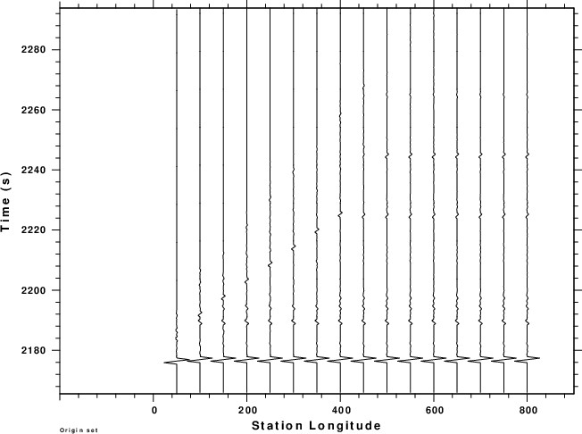
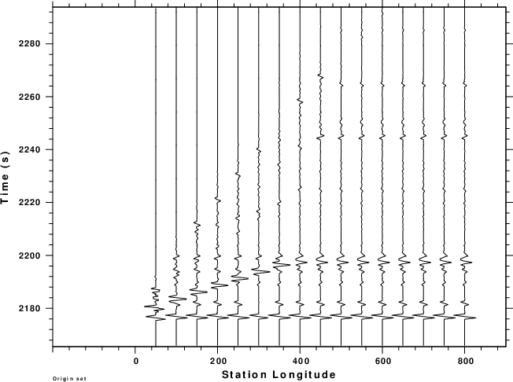
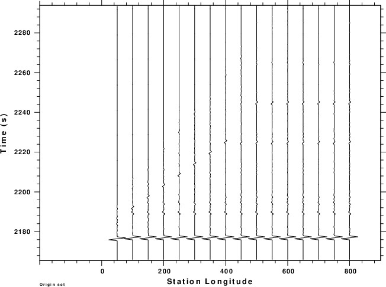
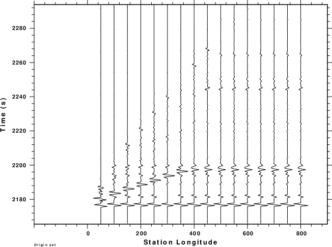

|  |
|  |
 |
The following scripts were run. Examine the DOIT which has many comment indicating the meaning of various lines.
Recall also that the angle search is based on the 0.055-0.065 s/km range of ray parameters from the source.
DOIT DOPLT DOREC DOSACITERD
|  |
|  |
|